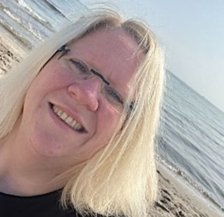
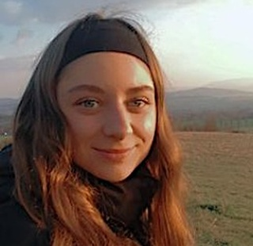
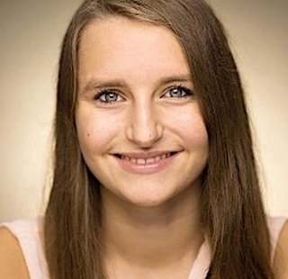
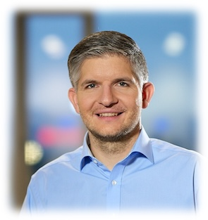

Das Team
Wir sind Susan, Diana und Magdalena, pädagogische Fachkräfte, mit einer gemeinsamen Leidenschaft: der
Arbeit
mit Kindern in der Natur. Unsere Überzeugung ist, dass das Draußensein und das Erkunden der natürlichen
Umgebung nicht nur Spaß macht, sondern auch eine essentielle Rolle in der Entwicklung der Kinder spielt.
Mit
Erfahrungen in der Waldpädagogik bringen wir vielfältige Kenntnisse und kreative Ideen in unsere Arbeit
ein.
Wir glauben daran, dass die Natur ein hervorragender Lernort ist, der es den Kindern ermöglicht,
spielerisch
zu entdecken, ihre Neugierde zu entfalten, wichtige soziale Fähigkeiten zu entwickeln und dabei behutsam
in
ihrem Tempo wachsen zu können.
Wir freuen uns auf eine vertrauensvolle Zusammenarbeit, in der wir Ihre Kinder auf spannende Abenteuer im
Wald und auf der Wiese mitnehmen und ihnen die Wunder der Natur näherbringen. Unser Ziel ist es, eine
liebevolle und familiäre Atmosphäre zu schaffen, in der sich jedes Kind wohl und geborgen fühlt!
Unterstützt werden wir von Christian, Mitgründer der DIESPECKMÄUSE und erfahrener Waldpapa. Er
unterstützt
unser Team ehrenamtlich bei der Planung, Organisation und übernimmt handwerkliche Aufgaben. Christian
bringt
viele Jahre Erfahrung als Waldwart in einem Waldkindergarten mit.

Susan Lantenhammer

Diana Fornataro

Magdalena Pfundt

Christian Kugler